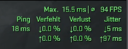
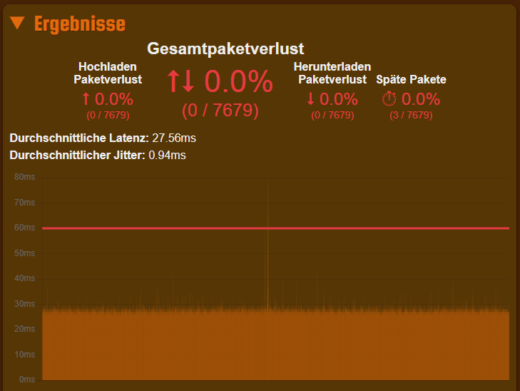

Liebe Community,
ich besitze den Glasfaser Tarif 1000 bei Magenta. Seitdem ich diesen Tarif besitze kommt es zu Problemen beim Zocken (zum Beispiel in Warzone bekomme ich bei der Suche immer Zeitüberschreitung bzw. in CS2 kann ich in einer Runde manchmal nichts kaufen). Der Ping sowie auch der Jitter ist perfekt, aber es kommt halt zu den oben genannten Problemen. Mein Pc ist via Lankabel an einem Repeater angeschlossen (Repeater ist von TP Link), da der Router in einem anderen Raum steht und ich nicht direkt vom Router aus ein Lankabel zu meinem Pc legen kann. Weiß einer was ich machen soll bzw. hat ein anderer auch solche Probleme?
Hallo @Lele02 , du schreibst, dass es zu den Schwierigkeiten kommt, seit du den Tarif hast.
Hattest du davor einen anderen Tarif von uns?
Die Internetverbindung sonst passt? Es kommt "nur" beim Zocken zu Zeitüberschreitungen?
Das passiert, unabhängig von der Tageszeit?
Das Signal zum Router hast du schon mal vom Technikteam überprüfen lassen?
Unsere Kolleginnen sind telefonisch unter 0676 200 7777 oder über den Chat in der Mein Magenta App 24/7 erreichbar. LG Karo
Hallo
@Karo
,
ja hatte ich, einen Kabelanschluss von Magenta.
Ja die Internetverbindung ansonsten passt. Ich habe auf dieser Website:
https://de.packetlosstest.com/
einen Test auf die CS2 Server gemacht (Siehe Screenshot). Ja genau, ich merke es nur beim Zocken (Ich habe es jetzt gerade nochmal mit Warzone probiert und jetzt hat es geklappt und dann 30min später wieder nicht, und auch in Rainbow zum Beispiel, wo ich bei der Suche einen Verbindungsfehler bekomme). Der Screenshot mit der grünen Schrift ist in CS2, wenn ich nichts mehr kaufen kann.
Nein habe ich noch nicht überprüfen lassen, aber wie Sie auch unten sehen, passt ja alles laut den Tests, die ich gemacht habe.
Vielen lieben Dank für die schnelle Rückmeldung. Wenn Ihnen nichts mehr einfällt, werde ich mich an Ihren Kolleginnen wenden müssen.
Lg Lele
.  
Bearbeitet von Lele02Hallo @Lele02 , ich bin keine Expertin puncto Gaming, leider.
Wenn die Verbindung sonst passt und es "nur" beim Zocken hängt, könnte es auch am Server des Spiels liegen.
Falls hier keine andere Antwort von Usern bekommt, empfehle ich dir dich direkt beim Technikteam zu melden.
Vielleicht haben unsere Kolleg:innen noch einen Tipp. LG Karo